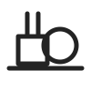

MATCHBOOK LEARNING · MORNING MEETING
MATCHBOOK LEARNING · MORNING MEETINGShow-Me Cards · Tarjetas para mostrar
Cut on the lines. Students hold up a card during Connect · Share so every student answers at the same time, with or without speaking.
 Choice AOpción A
Choice AOpción A Choice BOpción B
Choice BOpción B I can pointPuedo señalar
I can pointPuedo señalar I need more timeNecesito más tiempo
I need more timeNecesito más tiempoGood Things I See
Name: _____________________


Students: Color the good things you notice at school. Draw one more good thing.
Estudiantes: Colorea las cosas buenas que notas en la escuela. Dibuja otra cosa buena.

Un amigo

Un libro

El recreo
My commitment: Today I noticed something good:
Hoy noté algo bueno:
Family chat: What is one good thing you noticed today?
Charla en familia: ¿Qué cosa buena notaste hoy?
Point, say, draw, dictate, or write.
Thank You For…
Name: _____________________

Students: Match each helper to the thank-you. Draw someone you want to thank.
Estudiantes: Une a cada ayudante con sus gracias. Dibuja a alguien a quien quieres dar las gracias.
Gracias por leerme.
Gracias por compartir.
Gracias por abrir la puerta.
My commitment: I want to say thank you to… for…
Quiero darle las gracias a… por…
Family chat: Who helped you this week, and what did they do?
Charla en familia: ¿Quién te ayudó esta semana y qué hizo?
Point, say, draw, dictate, or write.
Thank-You Actions
Name: _____________________

Students: Circle the actions that show thanks. Draw yourself doing a thank-you action.
Estudiantes: Encierra las acciones que dan las gracias. Dibújate haciendo una acción de gracias.
Limpiar
Abrir la puerta
Invitar a jugar
My commitment: I can show thanks today by…
Hoy puedo dar las gracias así:…
Family chat: What is one way you help at home?
Charla en familia: ¿De qué forma ayudas en casa?
Point, say, draw, dictate, or write.
Thank-You Card
Name: _____________________


Students: Circle the helper you want to thank. Draw a thank-you picture for them.
Estudiantes: Encierra al ayudante al que quieres dar las gracias. Haz un dibujo de gracias para esa persona.

Equipo de la cafetería
Conserjes
La oficina
My commitment: Thank you, … for…
Gracias, … por…
Family chat: Who helps our neighborhood? How could we thank them?
Charla en familia: ¿Quién ayuda a nuestro vecindario? ¿Cómo podríamos darle las gracias?
Point, say, draw, dictate, or write.